Долями x Lamoda — мобильное приложение

О проекте
Долями — BNPL-сервис от Т-Банка. Делит покупку на 4 равных платежа раз в 2 недели, без процентов. Работает в чекаутах Lamoda, Золотого Яблока, Лэтуаль и других магазинов.
Проблема
Пользователи видят кнопку «Оплатить Долями», но боятся нажать. Триггеры: «это кредит», «будут скрытые проценты», «испортит кредитную историю». Высокий drop-off на этапе выбора способа оплаты.
Задача
Переосмыслить виджет в чекауте Lamoda и первый экран онбординга. Цель: пользователь за 3 секунды понимает — это не кредит, это бесплатно, это быстро.
Начала с анализа реальных отзывов пользователей Долями. Выделила три ключевых страха:
Кредитофобия — «Я не хочу связываться с кредитами ради кроссовок. Вдруг это пойдет в БКИ?»
Сложность — «Сейчас заставят паспорт фоткать, анкету заполнять... Проще картой оплатить сразу.»
Забывчивость — «А если я забуду, когда следующий платеж? Меня оштрафуют?»
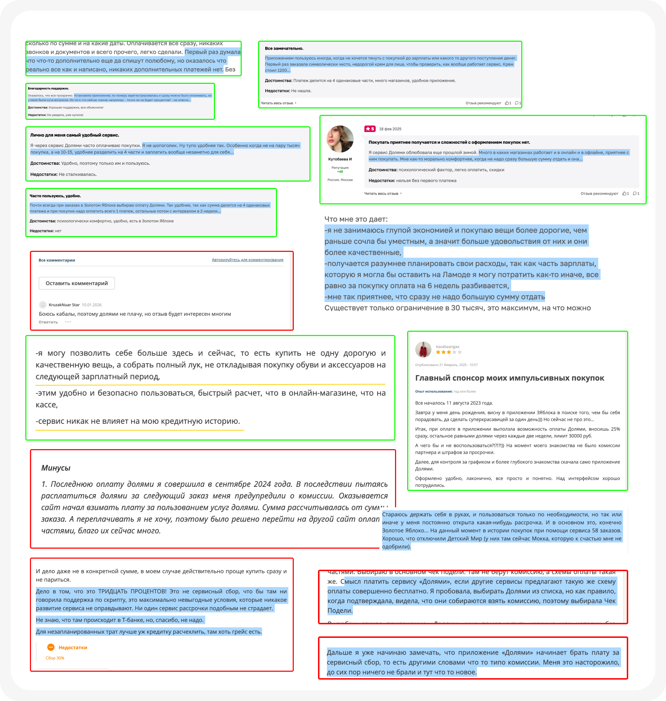
Отдельно зафиксировала: после введения сервисного сбора негатив в отзывах резко вырос. Пользователи воспринимают его как скрытую переплату и уходят к конкурентам, которые обещают «0% и без комиссий».
Выделила 3 сегмента по отношению к деньгам и рискам:
Скептик — ищет подвох, читает отзывы, боится скрытых списаний. Если видит что-то похожее на кредит или комиссию — уходит. Возвращается только после повторной проверки условий. Главная цель: оплатить частями без ощущения долга.
Контролёр — прагматик, планирует расходы. Имеет средства, но не хочет изымать всё из оборота сразу. Использует сервис как инструмент планирования бюджета. Сравнивает сценарии: если Долями берёт комиссию, а конкуренты нет — уходит туда, где выгоднее.
Импульсивный — решения принимает быстро, ориентируется на удобство и эмоции. Любая задержка, сложное оформление или требование паспорта разрушают импульс покупки. Частота зависит от триггеров: праздники, акции, новинки.
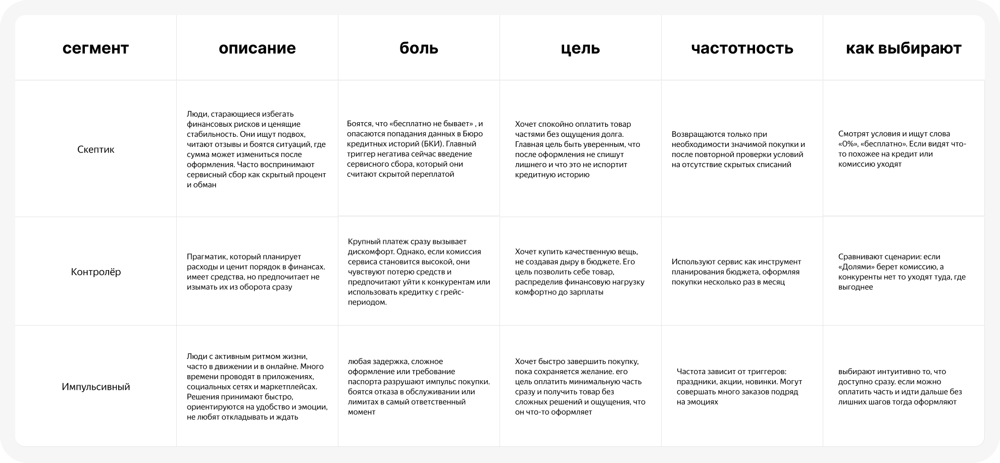
Для каждого сегмента сформулировала Job Story:
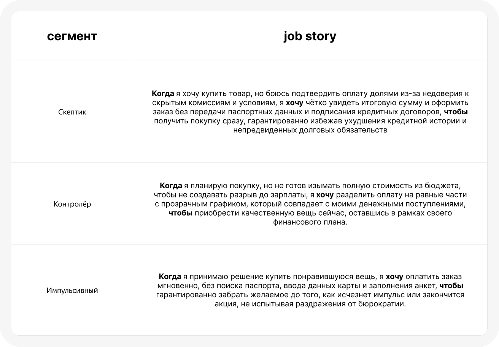
Разобрала BNPL-флоу 5 платформ: Lamoda (текущий), Яндекс Маркет/Сплит, Лэтуаль, Golden Apple, Авито/Плайт. Для каждой — полный путь от карточки товара до оплаты с аннотациями.
Ключевые находки:
Яндекс Сплит показывает комиссию в рублях, а не в процентах — это снижает тревожность. Тумблер позволяет включить Сплит прямо в корзине, не заходя в чекаут.
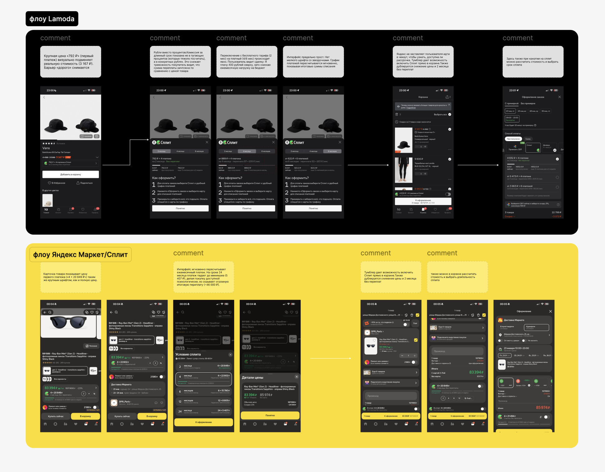
Golden Apple продаёт категорию BNPL целиком, а не конкретный сервис. В точке сравнения на фоне Сплита и Подели, обещающих «без процентов и переплат», подпись Долями «возможен сервисный сбор» выглядит как предупреждение об угрозе.
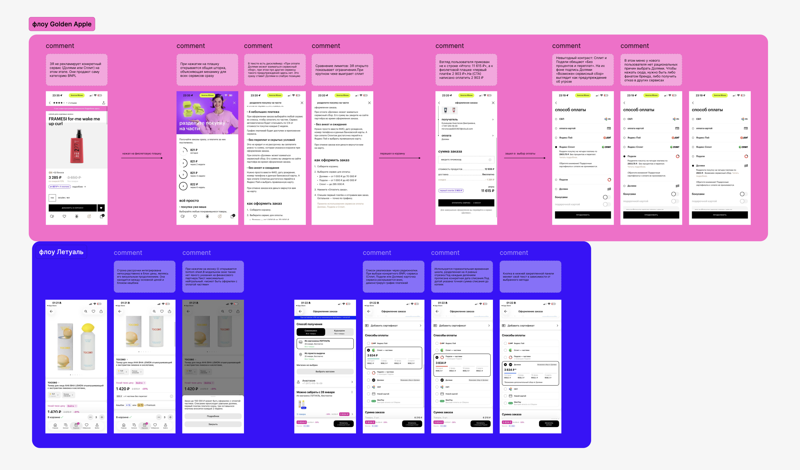
Лэтуаль использует механику аккордеона — 4 платежа видны сразу в списке методов оплаты.
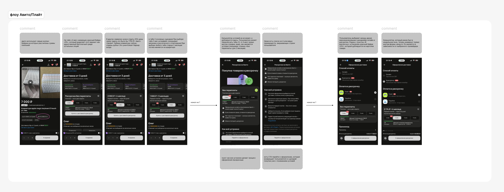
Авито/Плайт минимизирует барьер входа: первый платёж от 1 рубля, бейдж «0%» на бесплатном тарифе.
Вывод: у нового пользователя Lamoda нет рациональных причин выбрать Долями среди конкурентов.
На основе отзывов, сегментации и конкурентного анализа сформулировала 7 продуктовых гипотез с привязкой к метрикам и 6 поведенческих гипотез.
Далее приоритизировала гипотезы по методу ICE и выделила ключевые для кастдева.
Составила два гайда: для активных пользователей BNPL (6 блоков вопросов) и для избегающих (4 блока). Провела глубинные интервью, проверила каждую гипотезу на каждом респонденте.
Алекс (Скептик) — платит дебетовой, принцип «трачу только то, что есть». Долями = «кабала», «кнопка для ленивых». Не боится проверок данных — боится потерять финансовую дисциплину. Скорость оформления его отпугивает: «Я воспринимаю это как кнопку игрового автомата». Единственное, что заинтересовало — гипотеза с резервированием средств под процент.
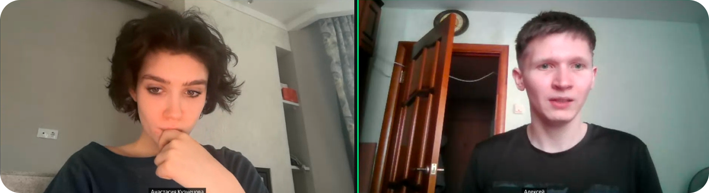
Ольга (Тревожная) — избегает кнопку, думает, что нажмёшь и «сразу повесят кредит». Долями = «микрозайм», «мошенничество». Но слово «рассрочка» воспринимает спокойно. Не знала, что сервис от Т-Банка — когда узнала, доверие резко выросло. Готова попробовать на маленькой сумме (1000₽) как тест-драйв.
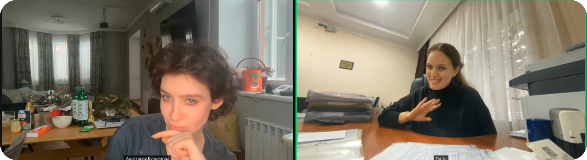
Настя (Прагматик) — активный пользователь, покупает через Подели и Сплит. Использует BNPL не от нужды, а чтобы купить больше вещей сразу. Но скрывает это от подруг: «Стыдно сказать, звучит как я бедная». Боялась, что данные уйдут в БКИ и не дадут ипотеку.
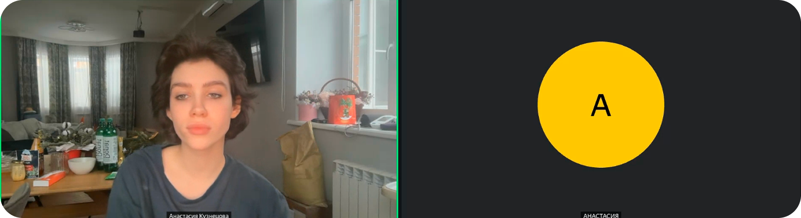
Прозрачность цены — подтверждено всеми тремя. Комиссии и условия ок, если честно показано сразу.
Наглядный процесс — сильнейший триггер у тревожных: «боюсь нажать и сразу повесят кредит». Скептикам тоже важна осознанность.
Анти-бюрократия — для Насти и Ольги снимает главный страх входа. Для Алекса нейтрально.
Бренд банка — критично для Ольги: убирает ассоциацию с МФО. У тревожных резко растит доверие.
Автономный контроль — все по-разному. Нужна контролируемая автономия: уведомления заранее, выбор «авто/вручную».
Простота vs скорость — не подтверждено у всех трёх. Скорость снижает доверие. Не продавать «в 1 клик», а добавить «умное трение»: шаги, чекбоксы, экран подтверждения.
Решение
Спроектировала полный флоу Долями в трёх этапах:
Старт оформления
Компактный бейдж на карточке товара, bottom sheet с графиком платежей и снятием страхов, аккордеон в корзине с тогглом и иконкой Т‑Банка на CTA для повышения доверия — три точки касания, которые проводят пользователя от интереса до оплаты без выхода из воронки.
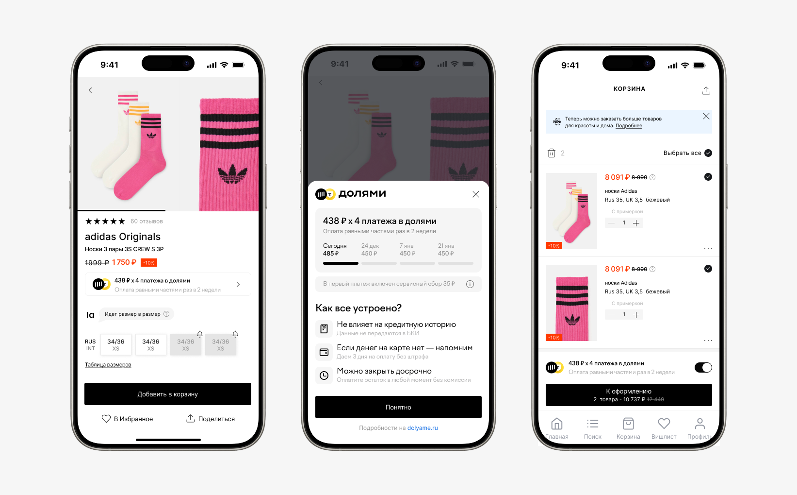
Идентификация
Для авторизированного пользователя при предзаполненных полях — ФИО, дата рождения, почта. Сабтайтл «кредитный договор не оформляется» снимает главный страх из исследования (7 из 10 ассоциировали сервис с микрозаймом).
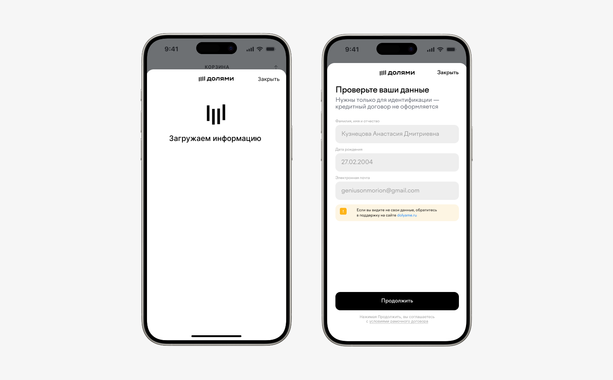
Минимальная форма: одно поле + кнопка. Нет лишних шагов — порог входа максимально низкий.
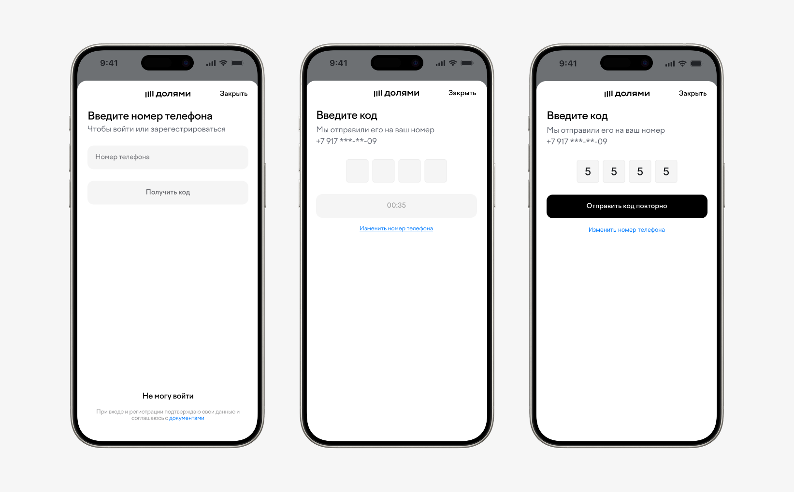
Для нового пользователя те же три поля без паспорта — форма не выглядит как заявка на кредит. Тот же сабтайтл про отсутствие кредитного договора.
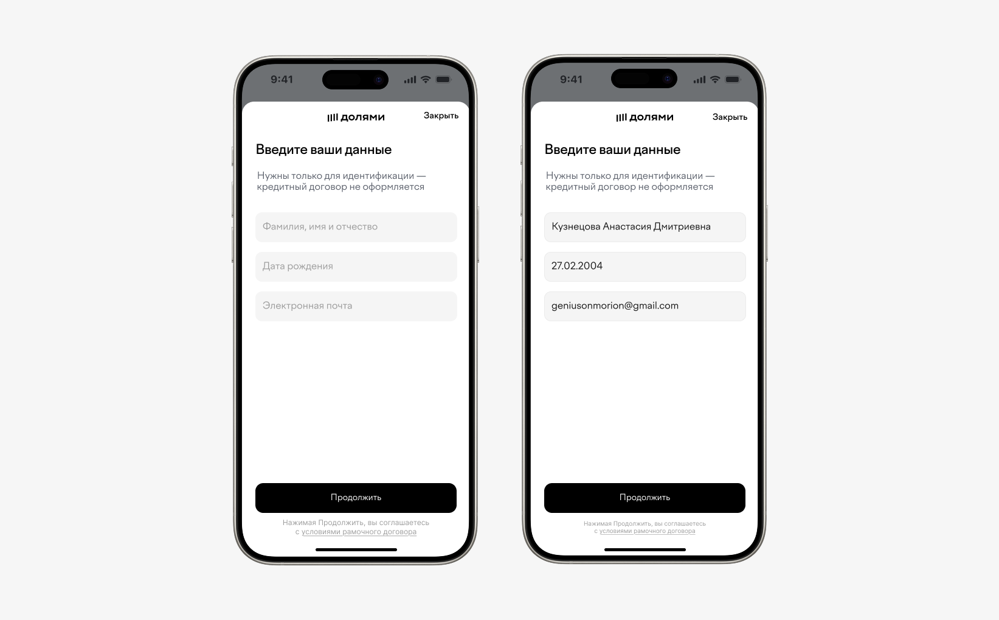
Подтверждение и оплата
Визуально экран оплаты ближе к лайфстайл-сервису, чем к банковскому интерфейсу — карточка с кастомным градиентом. Платёжные методы переработаны: вместо ручного ввода реквизитов — быстрые кнопки AlfaPay, SberPay, СБП и T‑Pay с переходом в приложение банка. Ввод карты вручную остался, но как запасной вариант, а не основной сценарий.
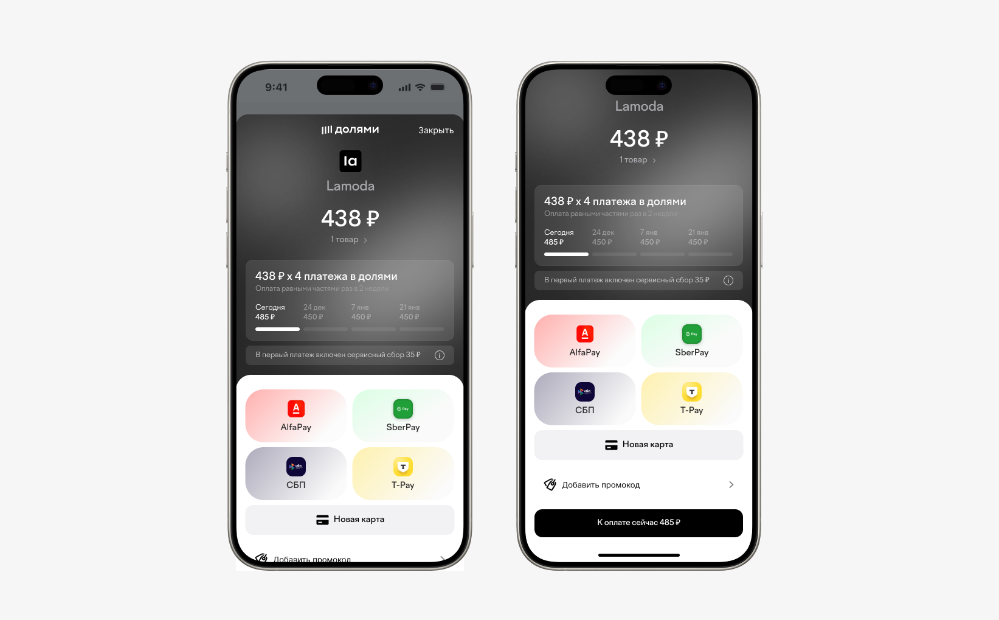
Ручной ввод карты остаётся как запасной сценарий — сервис запоминает её и при следующей покупке показывает в ряду сохранённых, сводя повторную оплату к одному касанию.
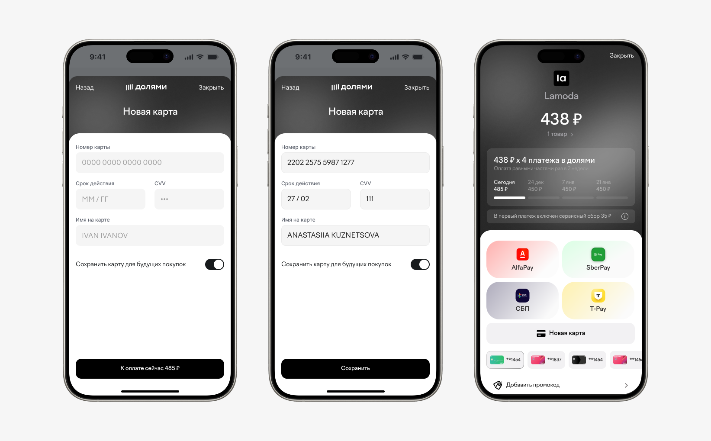
Три bottom sheet поверх экрана оплаты — каждый раскрывается по тапу на соответствующий элемент: info-иконка показывает объяснение сервисного сбора простым языком, ссылка «1 товар» раскрывает состав заказа с ценой, поле промокода — ввод и применение скидки. Вся дополнительная информация доступна без ухода с экрана оплаты.
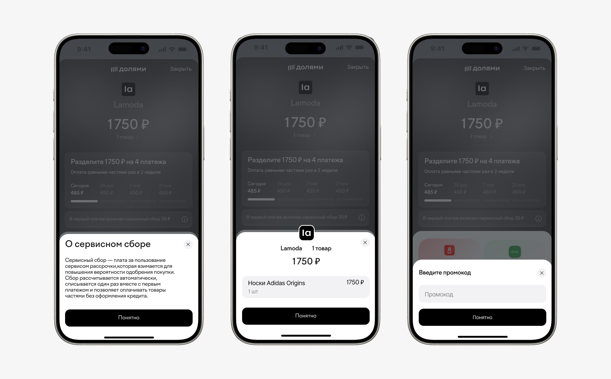
Продуктовые выводы
Анализ отзывов оказался ценнее, чем я ожидала. Страхи пользователей не про интерфейс — про восприятие категории. Пока виджет выглядит «по-банковски», никакой редизайн кнопок не поможет.
Интервью опровергли одну из главных гипотез: «простота и скорость = конверсия». Все три респондента сказали обратное — скорость оформления вызывает подозрения, а не доверие. Это развернуло концепцию: вместо «оформи за 10 секунд» — наглядные шаги, подтверждения, контроль.
Конкурентный анализ показал, что Долями проигрывает не по продукту, а по коммуникации. В одном меню выбора Сплит и Подели обещают «без процентов», а Долями предупреждает о «возможном сборе» — это проигранная битва до начала.
ICE-приоритизация отсекла слабые гипотезы на старте. Smart Reserve, соцдоказательство, микро-лояльность — интересные идеи, но с низким ICE-скором. Без приоритизации я бы пыталась реализовать всё и размыла бы фокус.